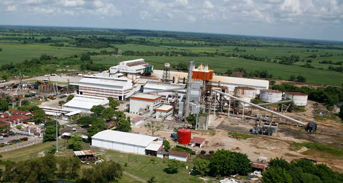
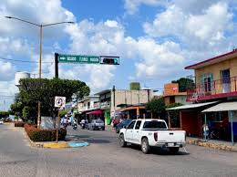

Economia de Tres Valles, Veracruz
Agricultura y Agroindustria

La economia de Tres Valles se sustenta principalmente en la agricultura y la agroindustria, destacando los siguientes cultivos:
- Caña de azucar: Tres Valles es el mayor productor de caña de azucar en Veracruz y el quinto a nivel nacional. Se cultivan aproximadamente 28,000 hectareas, de las cuales 24,000 son procesadas por el Ingenio Tres Valles. Esta actividad genera empleo para mas de 14,000 personas.
- Arroz: El municipio es el principal productor de arroz en Veracruz y uno de los primeros a nivel nacional. Aunque su producci칩n es menor que la de la caa, representa una actividad significativa.
- Otros cultivos: Tambien se cultivan maz, frijol, piña, sorgo y mango, diversificando la agricultura local.
Industria
Tres Valles cuenta con importantes instalaciones industriales que complementan su economia agricola:
- Ingenio Tres Valles: Construido en 1978 y operado por Grupo PIASA desde 1988. Tiene una capacidad de molienda de 13,000 toneladas de ca침a diarias, produciendo 1,500 toneladas de azucar al dia. Su zona de abastecimiento cubre mas de 37,000 hect치reas, cultivadas por mas de 6,000 productores.
- Planta de cogeneracion de energia: Desde 2011, el ingenio cuenta con una planta de 40 MW que utiliza el bagazo de caña como fuente de energia.
- Bio Pappel (anteriormente MEXPAPE): Ubicada en el kil칩metro 62+200 de la carretera Tinajas Cd. Aleman. Produce papel bond a partir del bagazo de caña desde 1979.
Comercio y Servicios
El sector terciario incluye una variedad de establecimientos comerciales y de servicios:
- Centros comerciales: Como el Centro Comercial Lores, que ofrece productos y servicios a la comunidad.
- Pequeños negocios: Tiendas de abarrotes, talleres mecanicos, farmacias y otros servicios que cubren las necesidades diarias de la poblacion.
Indicadores Economicos
- Produccion economica: La colonia Tres Valles Centro tiene un output economico de aproximadamente MXN $1,500 millones anuales, generado por hogares y establecimientos comerciales.
- Comercio internacional: En 2023, las compras internacionales del municipio fueron de US$779,000, destacando valvulas y articulos de plastico.